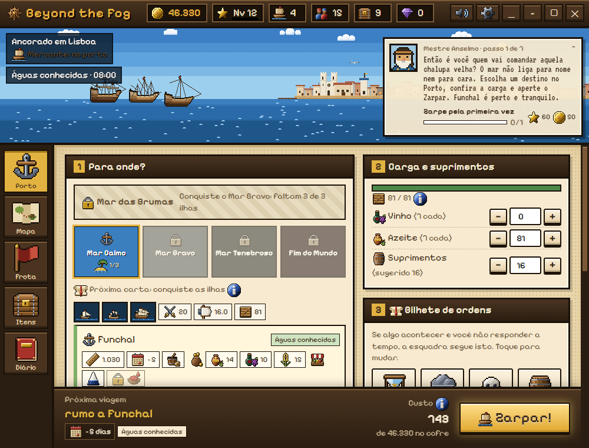
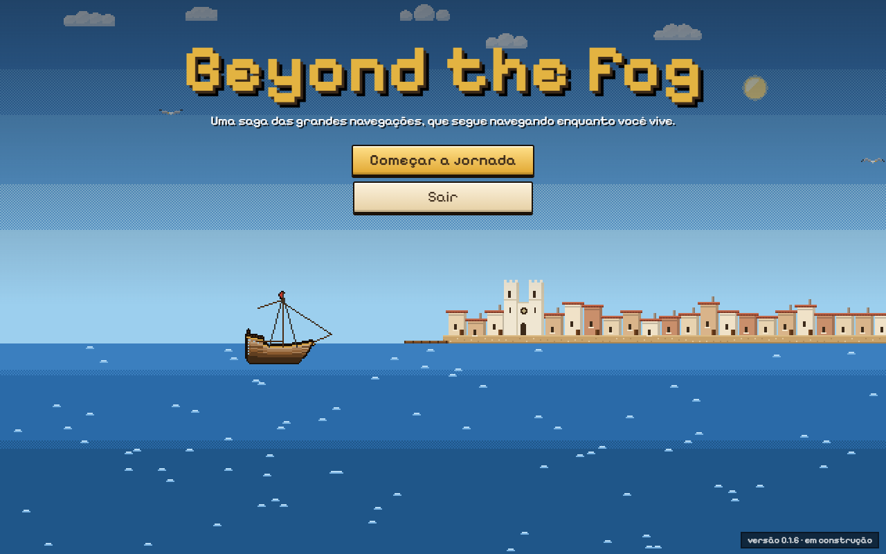

Procurando a versão mais nova…

O Windows mostrou um aviso azul?
É normal: o jogo ainda não tem a assinatura digital paga que o Windows reconhece. Para abrir:
- Clique em Mais informações.
- Clique em Executar assim mesmo.
Isso só aparece na primeira vez. Depois de instalado, o jogo se atualiza sozinho.
Instalador ou portátil?
Instalador: cria o atalho na área de trabalho e no menu Iniciar. É o melhor para a maioria.
Portátil: um arquivo que abre direto, sem instalar. Bom para levar num pendrive.
Já jogava?
Pode instalar por cima. O seu jogo salvo fica guardado e continua de onde parou.
Quem já tem o jogo não precisa voltar aqui: as versões novas chegam sozinhas, com o aviso "Reiniciar agora".
